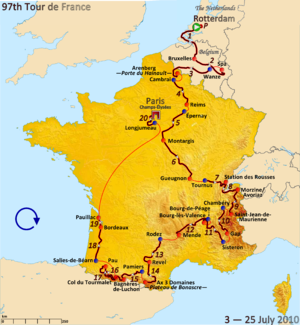

Guanyadors del Tour de França

| Any |
1 Lloc |
2 Lloc |
3 Lloc |
| 2020 |
T. Pogacar (ESL) |
P. Roglic (ESL) |
R. Porte (AUS) |
| 2019 |
E. Bernal (COL) |
G. Thomas (GBR) |
S. Kruijswijk (HOL) |
| 2018 |
G. Thomas (GBR) |
T. Dumoulin (BEL) |
C. Froome (GBR) |
| 2017 |
G. Thomas (GBR) |
R. Urán (COL) |
R. Bardet (FRA) |
| 2017 |
C. Froome (GBR) |
R. Urán (COL) |
Romain Bardet (FRA) |
| 2016 |
C. Froome (GBR) |
Romain Bardet (FRA) |
N. Quintana (COL) |
| 2015 |
C. Froome (GBR) |
N. Quintana (COL) |
Alejandro Valverde (ESP) |
| 2014 |
V. Nibali (ITA) |
J. C. Peraud (FRA) |
T. Pinot (FRA) |
| 2013 |
V. Nibali (ITA) |
N. Quintana (COL) |
J. Rodríguez (ESP) |
| 2012 |
B. Wiggins (GBR) |
C. Froome (GBR) |
V. Nibali (ITA) |
| 2011 |
Alberto Contador (ESP) |
A. Schleck (LUX) |
B. Wiggins (GBR) |
| 2010 |
Alberto Contador (ESP) |
C. Evans (AUS) |
L. Leipheimer (USA) |
| Altres |
... |
Enllaç al index